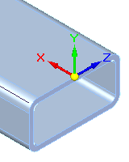
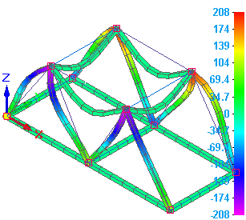
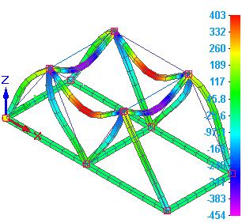
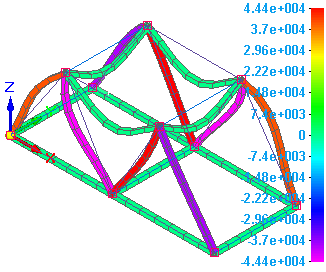
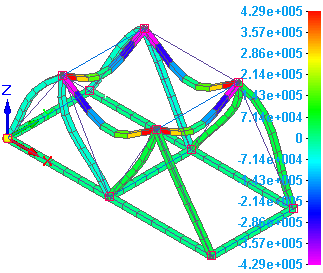
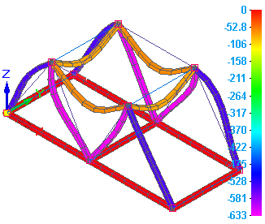
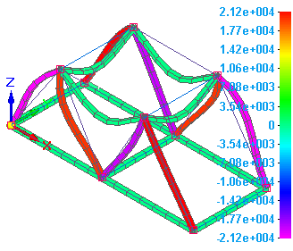

Beam reaction component plots
In the Frame environment, beam reaction component plots are available for structural frame models with a beam mesh type. When you select Beam End Reactions from the Result Type list in the Data Selection group, you can review the simulation results in any of the following stress component plots:
The Beam end reactions check box must be selected in the Create Study (or Modify Study) dialog box for these plots to be generated in the structural frame results.
Beam moment plots
You can plot the bending moment on each end of the beam members. Bending moment plots are displayed in two planes, represented by the coordinate system in the following image: The XY plane corresponds to Plane 1, and the XZ plane corresponds to Plane 2.

Plot these by selecting one of the following data types from the Result Component list in the Data Selection group:
-
Beam Plane 1 Moment

-
Beam Plane 2 Moment

Beam shear force plots
Shear forces caused by an applied load develop at the ends of beams. You can plot these shear forces by selecting one of the following data types from the Result Component list in the Data Selection group:
-
Beam Plane 1 Shear Force

-
Beam Plane 2 Shear Force

Beam axial force plots
In a structural frame consisting of many beam members, axial forces develop at the ends. You can plot axial forces by selecting the following data type from the Result Component list in the Data Selection group:
-
Beam Axial Force

Beam torque force plots
You can plot the torque forces on the beam ends by selecting the following data type from the Result Component list in the Data Selection group.
-
Beam Torque Force

How do I
Plot resultsLearn more
Plotting resultsResult plots for mixed mesh models
Displacement component plots
Stress component plots
Constraint component plots
Strain component plots
Beam properties
Beam stress component plots
Beam diagrams
Temperature plots
Heat flux component plots
Applied temperature plots